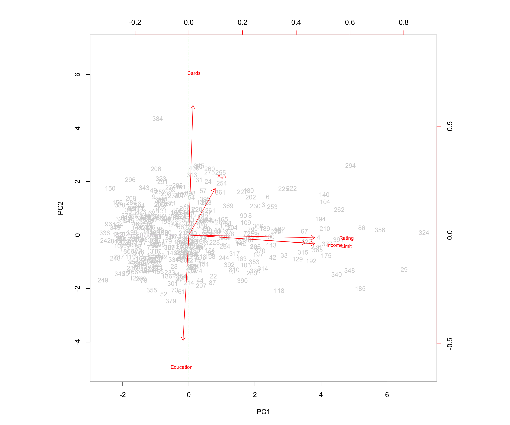
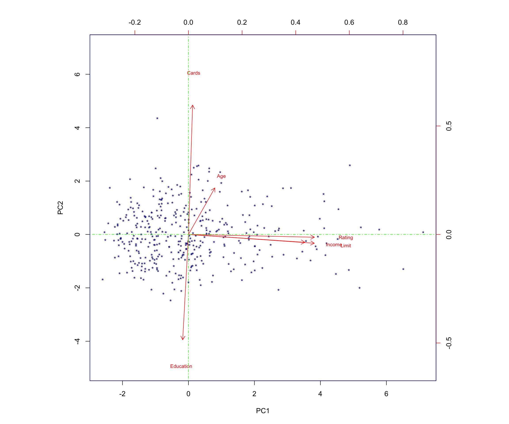

library(tidyverse)
library(factoextra)
library(cluster)Credit Applicant Analysis Using Principal Component Analysis (PCA)
1 Introduction
This case study analyzes the CreditShort data, which contains records for 400 applicants in terms of Income, Limit, Rating, Cards, Age, and Education.
My goals are to:
- Perform principal components analysis (PCA) using the
prcomp()function - Interpret the principal component loading vectors
- Visualize the first two principal components using a biplot
- Compute and interpret the proportion of variance explained (PVE) by each component
2 Setup
2.1 Load Libraries
2.2 Read and Examine the Data
Credit <- read.csv("CreditShort.csv")
head(Credit)summary(Credit) Income Limit Rating Cards
Min. : 10.35 Min. : 855 Min. : 93.0 Min. :1.000
1st Qu.: 21.01 1st Qu.: 3088 1st Qu.:247.2 1st Qu.:2.000
Median : 33.12 Median : 4622 Median :344.0 Median :3.000
Mean : 45.22 Mean : 4736 Mean :354.9 Mean :2.958
3rd Qu.: 57.47 3rd Qu.: 5873 3rd Qu.:437.2 3rd Qu.:4.000
Max. :186.63 Max. :13913 Max. :982.0 Max. :9.000
Age Education
Min. :23.00 Min. : 5.00
1st Qu.:41.75 1st Qu.:11.00
Median :56.00 Median :14.00
Mean :55.67 Mean :13.45
3rd Qu.:70.00 3rd Qu.:16.00
Max. :98.00 Max. :20.00 3 Part A: Principal Components Analysis with prcomp()
In this section, I perform principal components analysis using the prcomp() function and scale the variables by setting scale = TRUE so that each has standard deviation one. This ensures that all variables contribute equally to the analysis rather than allowing variables with larger scales to dominate the principal components. If I did not scale the data, differences in variance between variables could be unbalanced, and the visualization of the data would be difficult to interpret.
# Perform PCA with scaling
pr.out <- prcomp(Credit, scale = TRUE)
# Principal component loading vectors
pr.out$rotation PC1 PC2 PC3 PC4 PC5
Income 0.54282939 -0.04541949 -0.005415861 0.04337233 -0.837471424
Limit 0.58681668 -0.05070614 0.077252820 -0.06628280 0.380954388
Rating 0.58714608 -0.01587287 0.071176933 -0.09066882 0.374496404
Cards 0.01939936 0.74516159 -0.188347920 -0.63594008 -0.059479426
Age 0.12305992 0.26795881 -0.782053195 0.54017677 0.098265660
Education -0.02686689 -0.60666819 -0.584683141 -0.53786045 -0.008594761
PC6
Income -0.0021083866
Limit -0.7053987613
Rating 0.7081475715
Cards -0.0304194827
Age -0.0002254813
Education 0.0031246539The output above shows the principal component loading vectors. Each column of pr.out$rotation corresponds to a principal component, and each row corresponds to a variable (Income, Limit, Rating, Cards, Age, Education). The values show how strongly each variable contributes to each component. In PCA, the principal components capture the maximum variance in the data while simultaneously minimizing the approximation error, or the differences between the original data and the data defined by the principal component.
4 Part B: Biplot and Proportion of Variance Explained (PVE)
In this section, I:
- Create biplots of the first and second principal components
- Interpret the biplot
- Use the
sdevoutput ofprcomp()to compute the proportion of variance explained (PVE) by each principal component
4.1 Biplots of the First Two Principal Components
I plotted the first and second principal components using the biplot() function, adding optional arguments to customize the plot for better visualization.
# First biplot
biplot(pr.out,
col = c("lightgrey", "red"),
scale = 0,
expand = 2,
ylim = c(-5, 7),
cex = c(.9, .7))
abline(h = 0, col = "green", lty = 10)
abline(v = 0, col = "green", lty = 10)
# Second biplot with simplified observation labels
biplot(pr.out,
col = c("darkblue", "red"),
scale = 0,
xlabs = rep("*", 400),
expand = 2,
ylim = c(-5, 7),
cex = c(.9, .7))
abline(h = 0, col = "green", lty = 10)
abline(v = 0, col = "green", lty = 10)
4.2 Computing the Proportion of Variance Explained
To determine the proportion of variance explained (PVE) by each principal component, I:
- Used the
sdevoutput ofprcomp()(the standard deviation of each principal component). - Squared these values to obtain the variance explained by each component and stored them in
pr.var. - Computed the PVE using
\(\text{PVE} = \frac{\text{variance of PC}_j}{\sum_k \text{variance of all PCs}}\) by calculatingpr.var / sum(pr.var)and storing the result inpve.
# Variance of each principal component
pr.var <- pr.out$sdev^2
# Proportion of variance explained
pve <- pr.var / sum(pr.var)
pve[1] 0.4587877863 0.1760529143 0.1658180712 0.1550361054 0.0439416437
[6] 0.0003634791To make the interpretation easier, I convert the PVE values into percentages:
pve_percent <- round(100 * pve, 2)
pve_percent[1] 45.88 17.61 16.58 15.50 4.39 0.04The resulting percentages are:
- The first principal component explains approximately 45.88% of the variance.
- The second principal component explains approximately 17.61% of the variance.
- The third principal component explains approximately 16.58% of the variance.
- The fourth principal component explains approximately 15.5% of the variance.
- The fifth principal component explains approximately 4.39% of the variance.
- The sixth principal component explains approximately 0.04% of the variance.
As expected in PCA, the first principal component explains the highest percentage of the variance.
5 Interpretation of the Biplot
The left and bottom axes of the biplot represent the principal component 1 (PC1) and principal component 2 (PC2) scores for each observation (applicant). The top and right axes represent the positions of the variable vectors with respect to the origin. These are used to see how strongly each characteristic (Income, Limit, Rating, Cards, Age, Education) influences the principal components.
The key ideas to help interpret this plot are:
- The vectors represent the variables in the dataset. They point outward from the origin as the values they represent increase.
- Each vector points toward the principal component axis that it influences the most.
- Points that are close to a certain vector are highly associated with the variable that the vector represents. They explain higher levels of variability in the data for that variable.
- For example, applicant 361 is close to the point of the vector representing age. Applicant 361’s age is 82, a higher-than-average age for applicants.
- Points that are closer together share similar data patterns for the variables in the dataset.
- When vectors are close together and form small angles, the variables they represent are positively correlated: when one increases in value, the other also tends to increase.
- When vectors form large angles (beyond 90 degrees), the variables they represent are negatively correlated: when one increases in value, the other tends to decrease.
- The farther from the origin a vector extends, the more influence that variable has on the principal component to which it extends and the more impact it has on explaining variability in the data.
5.0.1 Relationships Among Variables
In this biplot:
- The vectors representing Rating, Income, and Limit are positively correlated because the angles between them are small. For example, this means that when a customer’s credit rating is high, their income and credit limit are also more likely to be high, illustrating how these variables trend together.
- Education and Cards are negatively correlated because the two arrows form an angle close to 180 degrees. This means the variables move in opposite directions—customers with more years of education tend to have fewer credit cards, while those with less education tend to have more.
I see that the first loading vector (PC1) places similar weight on Rating, Income, and Limit. This component corresponds primarily to these three variables that describe financial capacity or personal financial behavior.
The second loading vector (PC2) places most of its weight on Cards, corresponding to the number of cards the applicant has. It also places some weight on Age, while it places less emphasis on Rating, Income, and Limit. Education plays a minimal role (is less correlated) in this component.
In this plot, more variance occurs in relation to Rating, Income, and Limit, which aligns with the fact that these variables have strong loadings on PC1.
6 Full Code Listing
Below is a consolidated version of the core R code used in this analysis.
# Load Libraries
library(tidyverse)
library(factoextra)
library(cluster)
# Read Data
Credit <- read.csv("CreditShort.csv")
# Inspect Data
head(Credit)summary(Credit) Income Limit Rating Cards
Min. : 10.35 Min. : 855 Min. : 93.0 Min. :1.000
1st Qu.: 21.01 1st Qu.: 3088 1st Qu.:247.2 1st Qu.:2.000
Median : 33.12 Median : 4622 Median :344.0 Median :3.000
Mean : 45.22 Mean : 4736 Mean :354.9 Mean :2.958
3rd Qu.: 57.47 3rd Qu.: 5873 3rd Qu.:437.2 3rd Qu.:4.000
Max. :186.63 Max. :13913 Max. :982.0 Max. :9.000
Age Education
Min. :23.00 Min. : 5.00
1st Qu.:41.75 1st Qu.:11.00
Median :56.00 Median :14.00
Mean :55.67 Mean :13.45
3rd Qu.:70.00 3rd Qu.:16.00
Max. :98.00 Max. :20.00 # Perform PCA with scaling
pr.out <- prcomp(Credit, scale = TRUE)
# Principal component loading vectors
pr.out$rotation PC1 PC2 PC3 PC4 PC5
Income 0.54282939 -0.04541949 -0.005415861 0.04337233 -0.837471424
Limit 0.58681668 -0.05070614 0.077252820 -0.06628280 0.380954388
Rating 0.58714608 -0.01587287 0.071176933 -0.09066882 0.374496404
Cards 0.01939936 0.74516159 -0.188347920 -0.63594008 -0.059479426
Age 0.12305992 0.26795881 -0.782053195 0.54017677 0.098265660
Education -0.02686689 -0.60666819 -0.584683141 -0.53786045 -0.008594761
PC6
Income -0.0021083866
Limit -0.7053987613
Rating 0.7081475715
Cards -0.0304194827
Age -0.0002254813
Education 0.0031246539# Variance of each principal component
pr.var <- pr.out$sdev^2
# Proportion of variance explained
pve <- pr.var / sum(pr.var)
pve[1] 0.4587877863 0.1760529143 0.1658180712 0.1550361054 0.0439416437
[6] 0.0003634791# Biplots
biplot(pr.out,
col = c("lightgrey", "red"),
scale = 0,
expand = 2,
ylim = c(-5, 7),
cex = c(.9, .7))
abline(h = 0, col = "green", lty = 10)
abline(v = 0, col = "green", lty = 10)
biplot(pr.out,
col = c("darkblue", "red"),
scale = 0,
xlabs = rep("*", 400),
expand = 2,
ylim = c(-5, 7),
cex = c(.9, .7))
abline(h = 0, col = "green", lty = 10)
abline(v = 0, col = "green", lty = 10)
7 Conclusion
Through this principal components analysis of the CreditShort dataset, I found that:
- The first principal component captures a large portion of the variation (about 45.88%) and is driven primarily by Income, Limit, and Rating.
- The second principal component (about 17.61% of the variance) is driven largely by Cards and Age, and is negatively associated with Education.
- Together, the first two components explain over 63% of the total variance, providing a useful low-dimensional summary of the data.
These findings highlight how PCA can be used to uncover the main axes of variation in applicant financial and demographic characteristics, and how these axes can support interpretation, visualization, and potential downstream modeling or segmentation. Even in this simple example, PCA shows its usefulness as a tool for transforming high-dimensional data into a more compact form, making it easier to spot relationships, interpret drivers of variation, and build more efficient models.